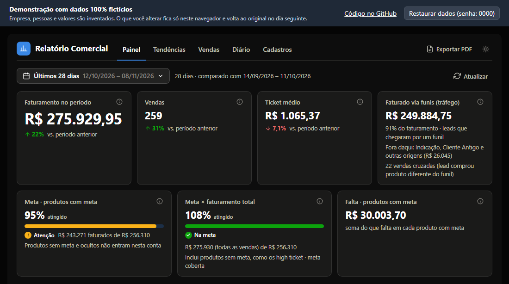

Sales · Goals · Funnel
Dynamic Sales Report
The sales team's first dashboard (there was none before), built together with the standardization of the sales spreadsheet: goals by product and by salesperson, trends, daily funnel per agent, lead income and automatic comparison with the previous period.
- Defined and documented the metric rules: goals prorated to the period, cross-sale attribution and unbiased conversion rates.
- Built an audit that cross-checks the funnel reported by agents against recorded sales and flags discrepancies.
- Designed the relational database and the REST API contract to connect the dashboard to the company platform.
- JavaScript
- SQL
- Node.js
- REST API
- Data auditing
- Automated tests